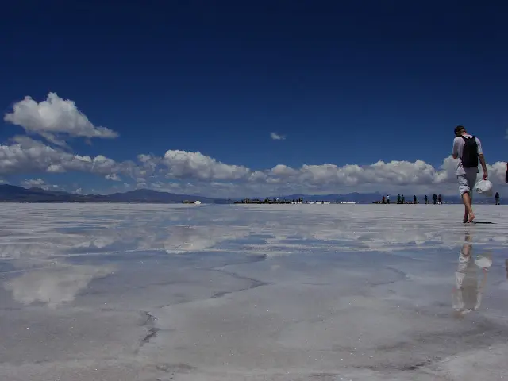
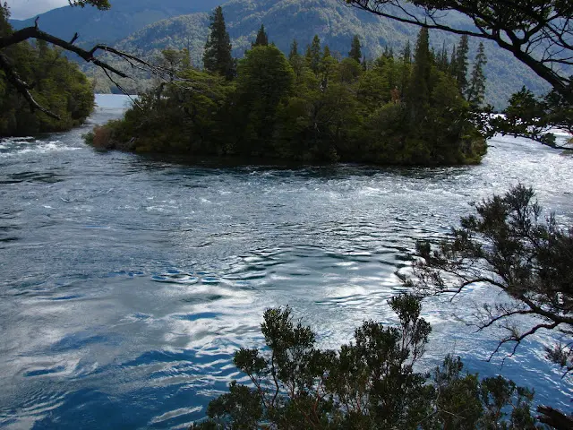

// FUERA DEL TRABAJO
Paisaje Jujeño
Grises, marrones, verdes, naranjas, celestes, blancos y la falta de horizonte, son todos los colores que se pueden encontrar en el Norte Argentino.
2 de febrero de 2009 · 1 minuto de lectura

Tiene lugares donde se puede ver el cielo mirando para abajo y lugares donde se ve la tierra desde arriba.
Las ventajas de vivir en un país extenso, se encuentran al poder estar en muy diferentes realidades que tienden a perder la idea de estar bajo la misma lupa.
Desde las áridas tierras de la Quebrada de Humahuaca a las verdes yungas en un abrir y cerrar de ojos. Muchos kilómetros recorridos y otros tantos por recorrer. Después de todo pasar la frontera no es tan difícil como parece.
Viajes relacionados

Cajón del Azul | Trekking
Si hay un lugar para perderse es en el Cajón del Azul. Es más grande de lo que parece. Siempre queda algún lugar por conocer.
Enero 2008
Piedra Parada Petzl Roc Trip
Un nuevo año volvimos a revivir este paisaje salvaje y árido, el singular monolito de 260 metros y el gran Cañón de La Buitrera.
Febrero 2015
I'll always be a climber
Empieza con un "Si voy a ir", porque es una tarde soleada y termina con vos renunciando a tu trabajo.
Agosto 2014Cajón del Azul | Trekking
// EL SIGUIENTE PASO
TU PRODUCTO.
SU PRÓXIMA ETAPA.
Una primera conversación para entender el desafío y ver si puedo aportar valor.
↗ Hablemos de tu proyecto